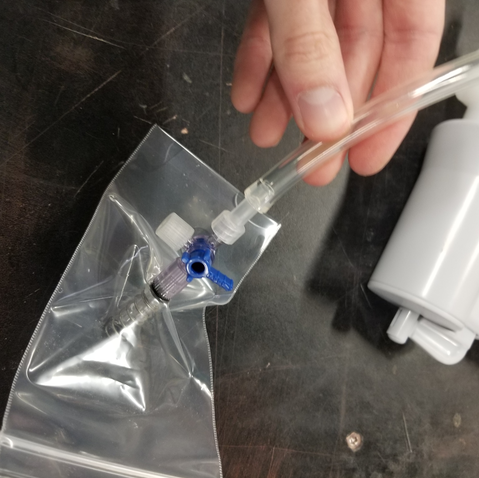
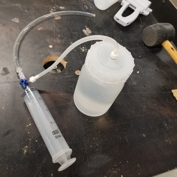
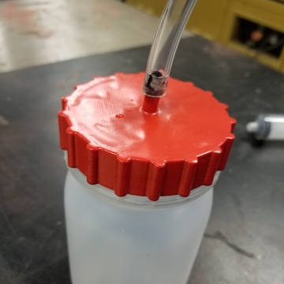
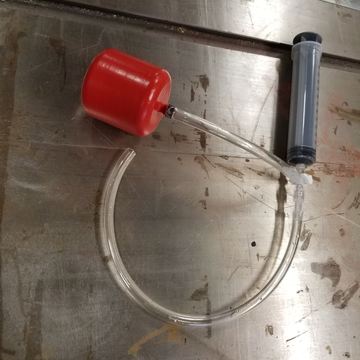

Work
Projects
UNO Biomechanics Machine and Prototyping
VR Visual Perturbation
In my time working as a Student Engineering Technician at the UNO Biomechanics Research Building, I was assigned to create a prototype of a VR app that could manipulate a person’s visuals. Our client wanted to be able to test the impact our sight has on balance and to measure the learning curve of adaptability for test subjects. Our client first proposed the idea of using an Oculus Quest VR Headset with a GoPro 7 to livestream the user’s point of view. After preliminary research, I wondered if an android phone using Google Cardboard would be viable. From there I built a quick minimum viable product for Google Cardboard and showed it to our client. Our client loved the portability and simplicity of the Google Cardboard android version over his initial idea. This was a fun project to learn about building apps for android and the impacts of visual sensory on our balance. Below is a video demonstrating the app.
Joint Aspiration Device
Another project I worked on at the UNO BRB was for Joint Aspiration Procedures (AKA: Arthrocentesis). Our client was a doctor that wanted to save time during his aspiration procedures since the doctor usually uses several syringes to suck out the excess fluids from target joints. I ran several tests on a vacuum bottle I created with excess medical supplies our client left us to ensure an adjustable flow rate and a volume large enough for average amount of joint fluids extracted. This was a fun project to explore fluid dynamics by testing and creating different apparatuses. Below are different stages in the design process resulting in two alternative design concepts.
First Design Prototype Test
Improved Seal and Capacity
Final Prototype Design 1
Final Prototype Design 2
Student Research Position
Hospital Triage Simulation
After taking a few courses taught by Dr. Ricks on Image Processing and Game Programming, I asked if I could get more involved with his research projects. After Dr. Ricks accepted me onto his amazing team, I got to work on a VR simulation project that would help train nurses attending the University of Nebraska Medical Center (UNMC) on the triage system used in hospitals. Our client wanted this simulation to simulate a hospital in a disaster to help train nurses under dramatic events. It has been fun to learn more about optimizing VR experiences, triage systems, protocols, and other graphical calculations needed for VR games. The video below is still in development and was created using a game engine called Unity 3D.
Omaha Street School
Gala Fundraiser
When I worked as a Collaborative Program Manager at UNO, I was partnered with Omaha Street School (OSS) to facilitate relations between UNO and the community. I helped out with the Gap-U and Leadership Academic programs at OSS. Each involved helping students learn real world skills such as career preparation, budgeting, housing, etc. I also helped develop and teach critical thinking skills, including hands-on activities to better engage the students. Each year they have a fundraising Gala where they invite donors from all over Omaha Nebraska. I was asked to be the Emcee for the second Gala I attended. Helping organize this Gala was such an amazing opportunity and was quite fun to speak in front of hundreds of people and the amazing OSS staff! Below are pictures from the two Galas I attended.
.JPG)
.JPG)
.JPG)
.JPG)
.JPG)
.JPG)
.JPG)
.JPG)
.JPG)